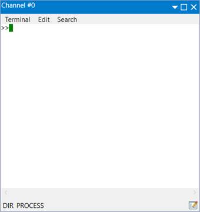
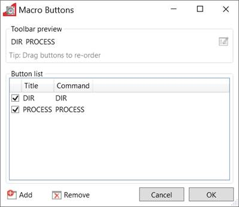

The "Terminal" tool allows the user to interact directly with the controller, either with the command line (direct or channel 0) or with user programs (channel 5, 6 or 7). Characters typed on the keyboard are sent to the controller and characters output by the controller are displayed in the terminal window.
|
Entry |
Description |
|
Logging |
Enable or disable terminal logging to a file. |
|
Script |
Controls terminal scripting |
|
Close |
Close the terminal tool |
When logging is active all the data displayed on the terminal is also written to a file. The name of the log file is displayed in the status bar at the bottom of the terminal window.
Motion Perfect has built in support for simple terminal scripting. This allows the user to write files of commands and then send the file contents to the controller in a single operation. In addition to the commands to be sent to the controller there are some extra commands which are used by Motion Perfect to control the running of the script.
|
Entry |
Description |
|
Clear all |
Clear the terminal window |
|
Copy |
Copy the selected text to the clipboard |
|
Paste |
Paste the text in the clipboard into the terminal output (sends it to the controller) |
|
Copy, Paste and Run |
Copy the selected text into the terminal output and append a carriage return. This is an easy way to rerun a previously used command. |
|
Entry |
Description |
|
Find |
Fins and Replace window |
|
Find Next |
Find next occurrence |
|
Find Prev |
Find previous occurrence |
|
Find Next Occurrence Current Selection |
Find next occurrence in current selection |
|
Find Prev Occurrence Current Selection |
Find previous occurrence in current selection |
This is the same as the edit menu (above)..
|
Keys |
Action |
|
Backspace |
Delete previous character |
|
Delete |
Delete character at the cursor position |
|
End |
Go to end of the line |
|
Home |
Go to start of the line |
|
Ctrl + Left Arrow |
Go to the start of the left word |
|
Ctrl + Right Arrow |
Go to the start of the right word |
|
Esc |
Abort this edit & reset the line |
|
Up Arrow |
Go to previous item in history buffer |
|
Down Arrow |
Go to next item in history buffer |
|
Ctrl + Delete |
Delete to the end of the line |
|
Tab |
Go to the start of the next word |
|
Insert |
Switch toggle insert mode |
|
Ctrl + Backspace |
Delete characters from the cursor position to the beginning of the next word |
|
F7 |
View History |
There are a row of user configurable macro buttons above the
status bar at the bottom of the terminal window. The user can configure these
to send often used strings (commands) to the controller. To configure these
buttons click on the
 icon at the right of the macro button bar.
This will cause the "Terminal Macro Buttons" dialog to be displayed.
icon at the right of the macro button bar.
This will cause the "Terminal Macro Buttons" dialog to be displayed.

The "Add" button will add an entry in the button list and the "Remove" button will remove the selected entry. The title of is the text which is displayed in the button in the terminal window. The command is the string of characters sent to the controller. A carriage return character will be appended to the string when it is sent.